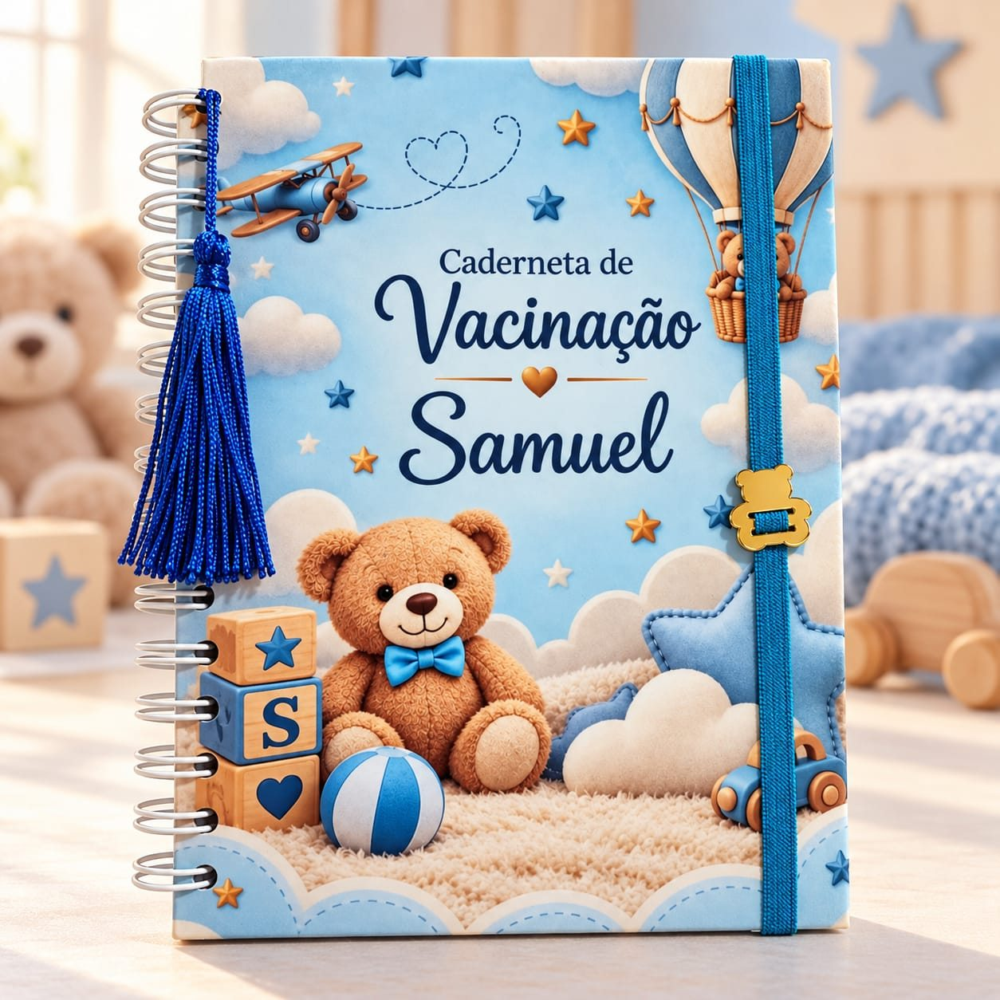
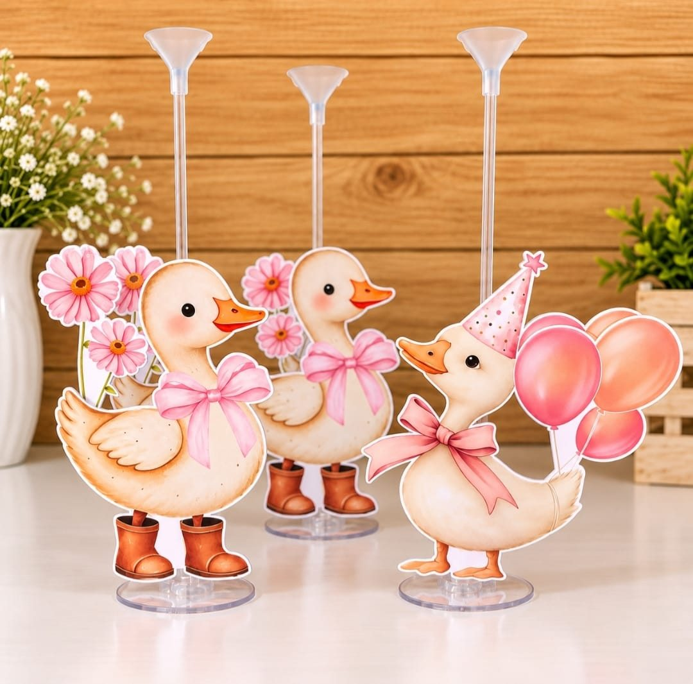
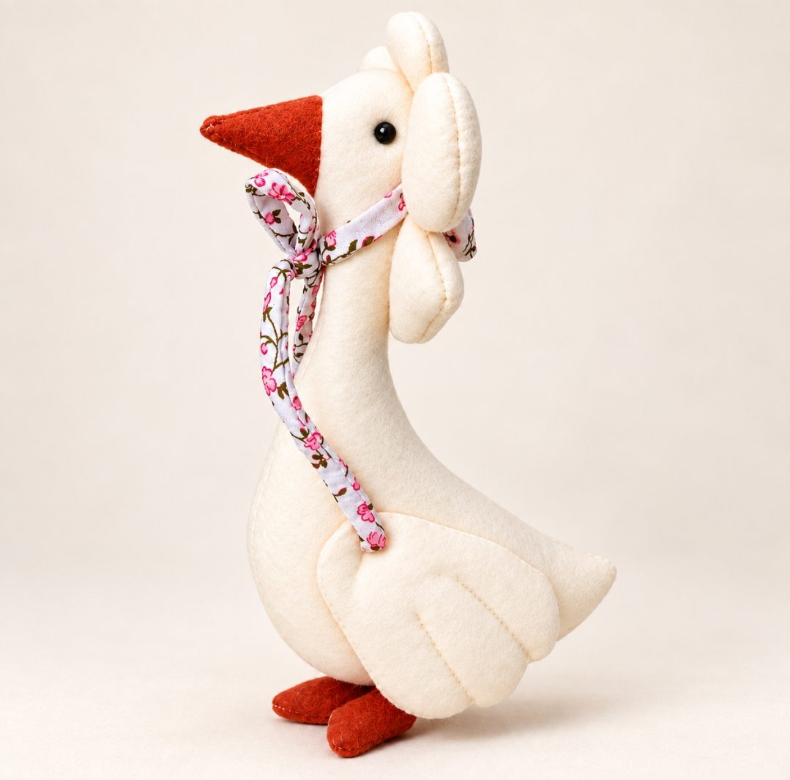

proposta 1 · calma
Design system
Uma mesa de ateliê calma: branco-rosado e tinta ameixa, rosa-chiclete só onde há ação, fotos como adesivos recortados e uma linha de costura que costura a página. Tudo vive em css/tokens.css e css/site.css.
Cores
Tiradas da logo e suavizadas. A cor forte da marca fica nas ações e nos detalhes; os fundos são quase brancos. As razões de contraste abaixo são calculadas ao abrir a página.
Tipografia
Fredoka nos títulos (arredondada, parente do lettering da logo, mas mais calma), Figtree no texto corrido e Caveat só para notas à mão.
Peças com o seu nome
Tudo feito sob encomenda
Cadernetas e agendas
Você escolhe o tema, o nome e as cores. A gente cuida do resto, com capricho em cada detalhe.
Texto de apoio em tinta suave, sempre acima de 6:1 de contraste.
com o nome de quem vai usar
O seu nome na capa
Espaço, forma e sombra
Ritmo de 8 px. Cantos arredondados em três níveis. Uma única sombra para o “adesivo” e uma para quando ele levanta.
Componentes
Botões
Costura tracejada interna em todo botão. Um único botão principal por tela; o resto é contorno.
Filtros
Adesivo (foto com contorno)


Centro de mesa · Patinhos
Enfeites com haste e base transparente.
Campos de formulário
Blocos de seção
--bg--tint--wash-pink--wash-turqMovimento
Um ritmo só. Os adesivos “pousam” ao aparecer, levantam um pouco ao passar o mouse, e a linha de costura se desenha na margem conforme a rolagem. Tudo é desligado para quem pede menos movimento.
rápido 160 ms · base 280 ms · lento 600 ms
cubic-bezier(.22, .8, .24, 1)transform e opacidade

Passe o mouse no adesivo ao lado.
Regras
- Deixe as fotos reais mandarem; a interface fica de lado.
- Use o rosa forte só em ação.
- Todo produto termina em “faça seu orçamento”.
- Alvos de toque de 44 px ou mais.
- Nenhum preço, prazo ou depoimento que a Viviane não tenha confirmado.
- Nada de fundo colorido atrás de texto longo.
- Sem emoji como ícone.
- Sem animação que não tenha um motivo.